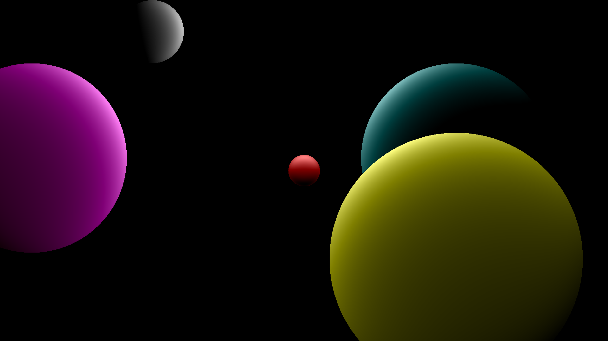

Parallel Ray-Caster:
This project was designed around 2D lighting and how
to replicate Ray-Caster. The implementation creates circles
around the "world" and applies a specified colour. Light sources
are placed within the scene. The program runs through each pixel
on the screne and calculates if the rays being fired collide
with a circle. It then uses the distance between the pixel and
the light sources to determine the shadowing/colour gradiant.
In addition, OpenCL 1.2 is used to optimise the speed of compilation and run time. By using micro-thread parrelisation, the performance of the program improves rapidily.
Source
In addition, OpenCL 1.2 is used to optimise the speed of compilation and run time. By using micro-thread parrelisation, the performance of the program improves rapidily.
Source

A* Pathfinding:
This A* program creates a grid of squares (nodes) which
represents a map within a game. The user then provides a start
and end point for the path. It calculates the most efficient
path using the A* Algorithm to the final square. The program
uses SDL 2.0 pure for the window and visual elements of the
software. The whole design of the program was to be dynamic.
Allowing different sized grids and nodes to be used. This was
so that the algorithm could react as if it were in a real
engine/game.
Source
Source

{kind=link}